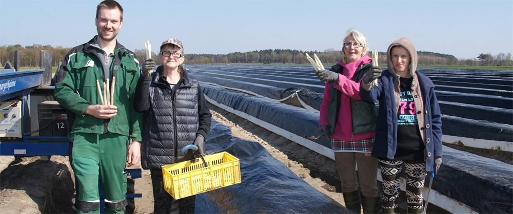
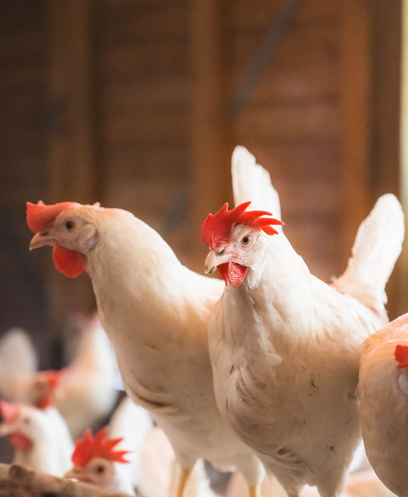
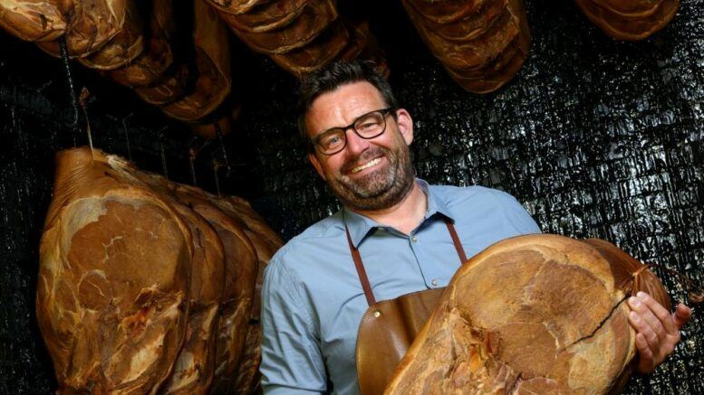
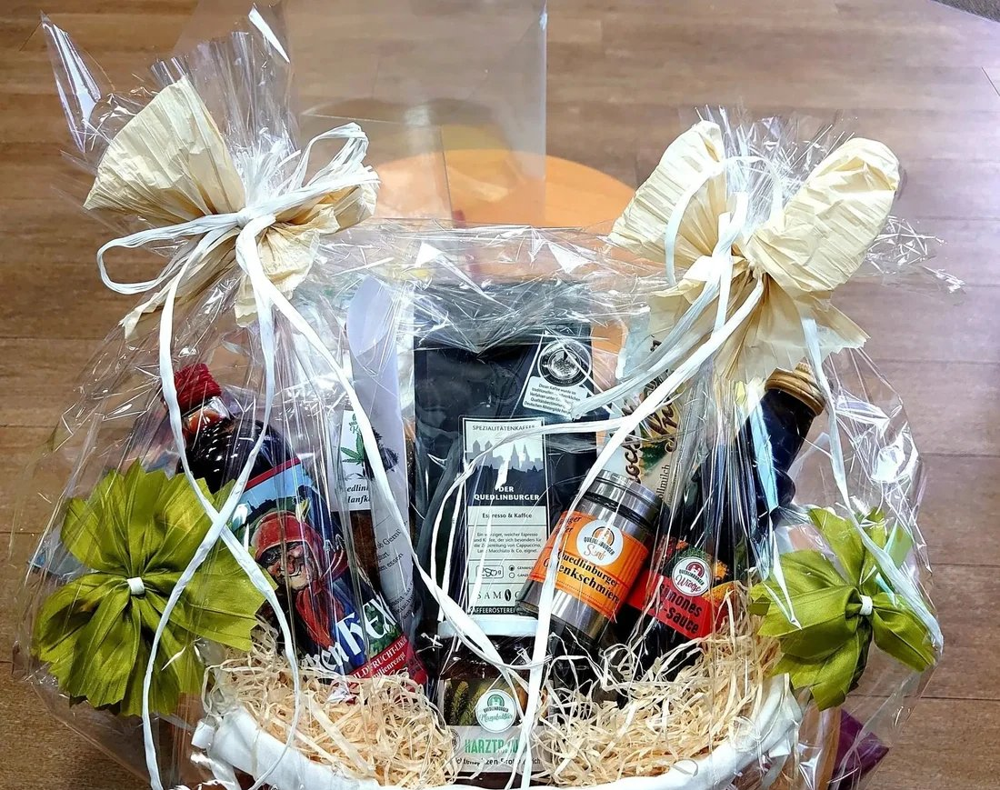

Ihr Markt
Hier finden Sie alles vor Ort.

Nenndorf
Jetzt geöffnet bis 20 Uhr Platzhalterbild
Platzhalterbild Platzhalterbild
PlatzhalterbildEssen und Trinken in Nenndorf
Die Speisekarten.
Weinstube und Marktgrill haben je eine eigene Karte und eigene Zeiten. Ein Klick, und die Karte liegt offen.

Weinstube
Frühstück, Tortenstücke und eine gute Auswahl an Wein.

Marktgrill
Döner, Würstchen und Pommes, frisch zum Mitnehmen.
Öffnungszeiten
Wann ist wo geöffnet?
Alle Märkte auf einen Blick. Feiertage und Sonderzeiten stehen direkt dabei.
Sonntag einkaufen · Vahrendorf
Sonntags ist der Kühlschrank leer? Kein Problem.
Alles, was Sie vor dem ersten Besuch im Hybridmarkt Vahrendorf wissen wollen, auf einer Seite.
Aktuell
Angebote der Woche.
Ein Klick führt direkt zu den aktuellen Angeboten bei EDEKA. Sie gelten für alle drei Märkte.

Aktuelles aus den Märkten
Was bei Meyer gerade passiert.
Neue Gesichter, neue Aktionen, Berichte aus den Märkten. Jeder Beitrag bleibt im Archiv.


Team und Karriere
Drei Fragen an ... das Team.
Menschen aus den Märkten in drei Fragen und drei Antworten. Dazu offene Stellen und Ausbildung, gefiltert nach Markt.
Das E-Paper
Jeden Monat eine neue Ausgabe.
Rezepte, Geschichten aus der Region und Aktionen aus den Märkten, in jeder Ausgabe neu. Ein Klick auf die Titelseite öffnet die aktuelle Ausgabe.
In dieser Ausgabe
- Gans to go: der Festtagsbraten zum Vorbestellen
- Suppen aus der EDEKA Küche im Aktionspreis
- Neu in der Weinstube: Crispy Chicken Burger und Fitness-Teller
- Aufgetischt: Calle Hofmann und seine Kohlrouladen
- Tim Fischer, Jahresbester mit Note 1
Außerdem bei Meyer.
Aus der Region
Gerade frisch von Höfen aus der Nähe.
Wer hat es angebaut, wann kommt es in den Markt, und wie weit ist der Weg? Ein Klick führt zum Hof.




Häufige Fragen
Gibt es bei Ihnen eigentlich ...?
Die Fragen, die an der Info jeden Tag kommen. Die Markierung zeigt, in welchem Markt es das gibt. So fährt keiner umsonst.
Gibt es Einkaufswagen mit Kindersitz?
Kann ich überall kontaktlos bezahlen?
Gibt es Selbstbezahlkassen, und wie viele?
Wo gebe ich mein Leergut ab?
Wie funktioniert der Einkauf in Vahrendorf?
Kann ich etwas vorbestellen?
Gibt es eine App, und wo lade ich sie herunter?
Habt ihr Bio, Regionales, Glutenfreies oder Veganes?
Gibt es im Markt einen Bäcker?
Was gibt es am Infotresen?
Gibt es frischen Fisch und frisch gerösteten Kaffee?
Kann ich Päckchen abgeben oder abholen?
Kann ich Schuhe reparieren lassen oder eine Handyhülle kaufen?
Kann ich in der Weinstube einen Tisch reservieren?
Wie bestelle ich einen Präsentkorb?
Wie melde ich einen Termin für unseren Verein?
Wen erreiche ich, wenn ich Lob oder Kritik habe?
Im Markt zu Hause
Partner und Infotresen.
Unter einem Dach: Wer bei uns einkauft, erledigt vieles gleich mit.
Präsentkörbe und Geschenke
Schenken, was ankommt.
Körbe mit regionalen Produkten, Wein und Feinkost. Eine Anfrage für alle Märkte, abgeholt wird dort, wo es passt.

PräsentkorbWeinabteilungDie App
Die App für unterwegs.Die EDEKA-App: Angebote ansehen, Markt wählen, Einkaufsliste schreiben.Instagram zeigt das Heute. Hier steht, was bleibt.
Aktionen, Termine und Vorbestellungen sind hier gebündelt. Wer auf Instagram etwas sieht, findet auf der Seite Details und den Weg zur Bestellung.


Schwarzes Brett
Termine aus der Region.
Vereine, Initiativen und Veranstalter aus der Nachbarschaft. Wer einen Termin hat, meldet ihn an, wir stellen ihn ein.
Marktgrill Nenndorf
Speisekarte
Täglich
Preise in Euro. Zusatzstoffe und Allergene erfahren Sie an der Theke. Telefon 04108/41388-25.
Weinstube Nenndorf
Speisekarte
Gerichte der Woche
Vorspeisen und Suppen
Salate
Pasta
Fleisch und Klassiker
Fisch und Meer
Aus dem Ofen
Preise in Euro. Fragen zu Zusatzstoffen und Allergenen beantwortet das Personal. Kinderportionen auf Anfrage, nicht bei allen Gerichten. Telefon 04108/41388-23.